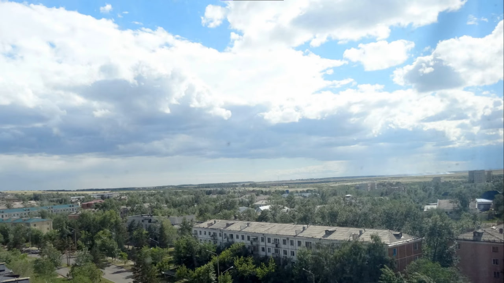
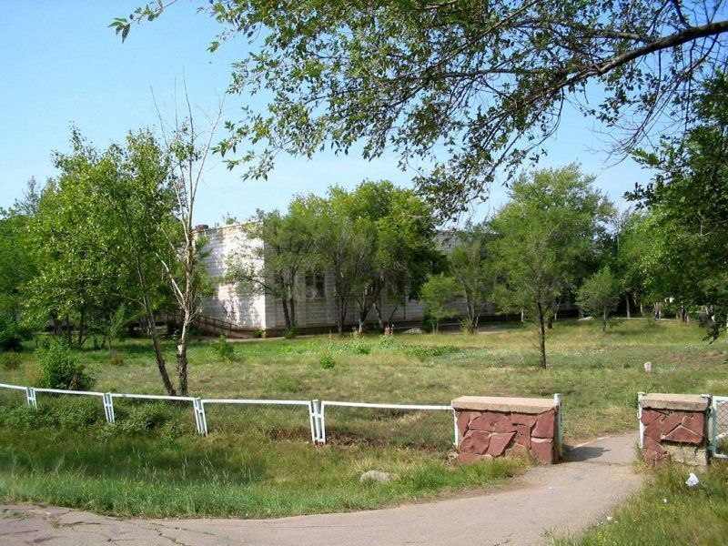
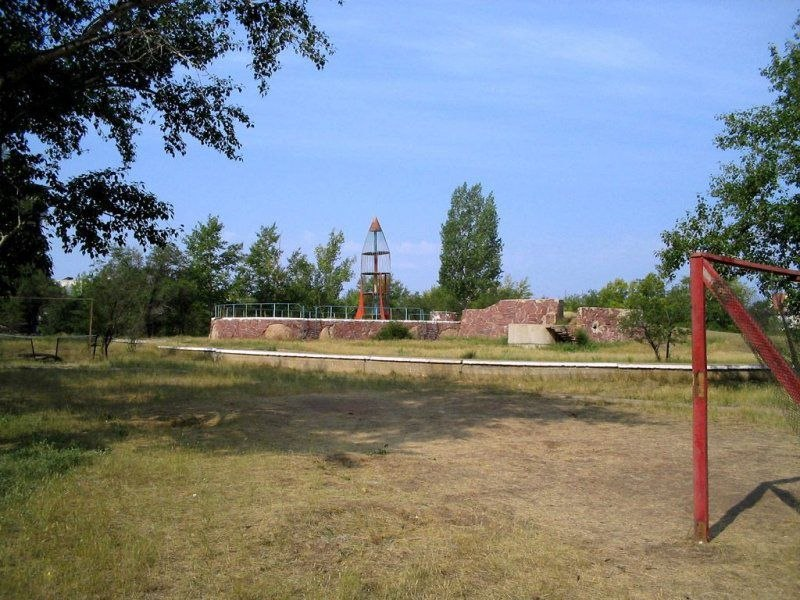
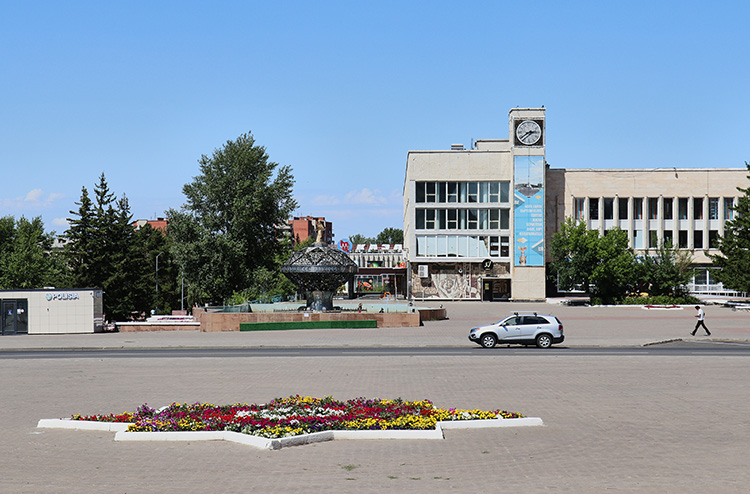
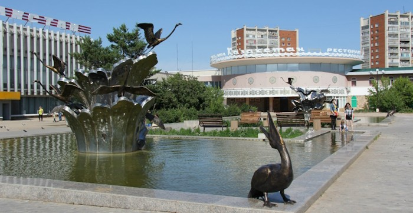
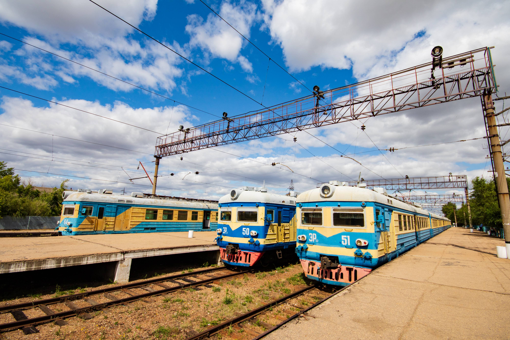
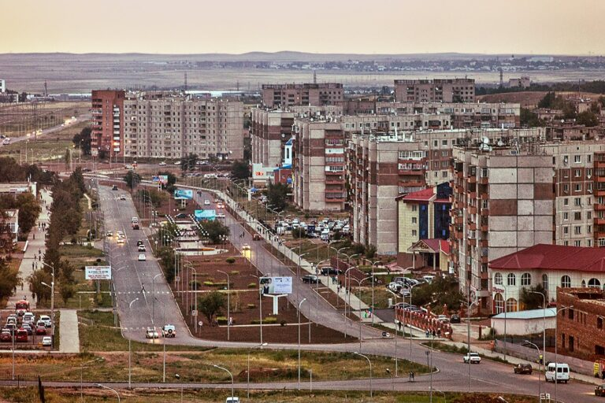
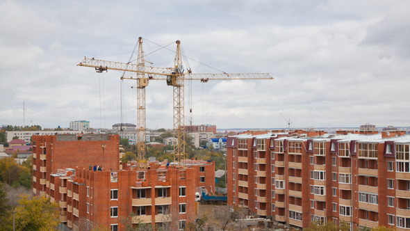
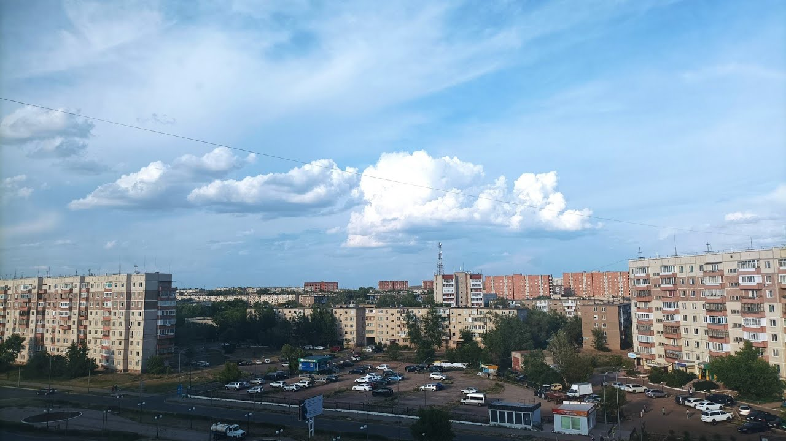

Старый город (1, 2, 3 микрорайоны)
Строительство и научный подход
Проектирование этих районов велось специалистами ленинградского ВНИПИЭТ. Степногорск (тогда Целиноград-25) создавался как закрытый атомный наукоград, поэтому каждый дом здесь — результат математического расчета. В основу легла концепция «периметральной застройки»: здания образуют замкнутые или полузамкнутые дворы.
Это делалось не ради красоты, а для выживания: зимой в степи скорость ветра достигает 25-30 м/с. Такая расстановка домов гасила силу ветра внутри двора на 40-60%. Для строительства использовали красный кирпич и экспериментальные газоблоки, которые позволяли удерживать тепло в квартирах даже при -40°C.
Культурный слой и быт
Эти районы называют «зелеными легкими». Поскольку почва в степи крайне бедная, для высадки деревьев сюда завозили тысячи тонн чернозема. Первые жители — ученые и инженеры — сами высаживали вязы и тополя, которые сегодня стали выше пятиэтажек.
В этом массиве находится Школа №1 — она проектировалась как элитный лицей того времени с расширенными лабораториями. Здесь же работали первые «магазины-стекляшки» с московским обеспечением, что в 60-е годы казалось фантастикой для жителей соседних областей.



Золотой век (4, 5, 6 микрорайоны)
Архитектурная революция
В 70-х Степногорск начал расти вверх. Это время «советского модернизма». Появились знаменитые девятиэтажки серии 1-464АС, которые стали визитной карточкой 4-го микрорайона. Архитекторы отказались от тесных дворов первого этапа в пользу огромных открытых пространств и широких проспектов.
Уникальность центральной части в том, что здесь применено вертикальное зонирование. Пешеходные пути максимально отделены от дорог. Центр города представляет собой огромную «платформу», где расположены административные здания, магазины и места отдыха, что исключает необходимость частого пересечения оживленных трасс.
Доминанты и объекты
В 6-м микрорайоне был создан мощный спортивно-культурный кластер. ДК Горняк строился как дворец республиканского масштаба: его зал и сцена позволяют ставить полноценные оперные спектакли. Рядом расположился Дворец спорта «Сибиряк» с бассейном, проект которого был уникален для северного Казахстана.
В центре массива стоит Школа №4. В 70-е и 80-е годы эти районы были лицом города на всех открытках — здесь демонстрировалась мощь советской индустрии и забота о быте рабочих комбината.



Высотный Полис (7, 9 микрорайоны)
Концепция спальных районов
Эти микрорайоны строились в период максимальной численности населения города. 7-й микрорайон задумывался как самый автономный: здесь применили концепцию «город в городе». Огромный акцент был сделан на медицину — здесь выстроен целый городок из поликлиник и больничных корпусов, чтобы жителям отдаленных районов не приходилось ездить в центр.
9-й микрорайон стал «краем» города. Дома здесь ставились по технологии ступенчатой застройки, чтобы постепенно снижать ветровую нагрузку на внутренние кварталы. Строительство велось ударными темпами, но из-за распада Союза многие амбициозные проекты (например, новые торговые центры внутри 9-го) остались на бумаге или были достроены позже.
Образовательная база
Школы №7 и №8 строились по более современным, «просторным» проектам. В них закладывались огромные столовые, два спортивных зала и широкие рекреации. Технические подробности их фасадов можно найти в разделе Архитектура.


Автономия Будущего (20-й микрорайон)
Градостроительный эксперимент
20-й микрорайон — это результат переосмысления городской среды. После десятилетий плотной застройки архитекторы решили вынести новый массив за пределы основного кольца. Это позволило избежать перегрузки старых коммуникаций и создать экологически чистое пространство с нуля.
Здесь применены современные стандарты: широкие межквартальные проезды, улучшенная инсоляция (солнечное освещение) квартир и современные детские площадки. 20-й микрорайон стал домом для нового поколения горожан, ценящих тишину и современную инфраструктуру.
Центр притяжения: Школа №9
Главным украшением района является Школа №9. Это здание — настоящий шедевр функционализма 21 века. Оно кардинально отличается от советских школ: огромные стеклянные витражи, модульные классы и современный стадион, который является центром жизни для всей молодежи микрорайона.
Район продолжает активно застраиваться, здесь открываются новые торговые точки и сервисные центры, что делает его абсолютно независимым от центра города. Подробнее о жизни района читайте в разделе Культура.

